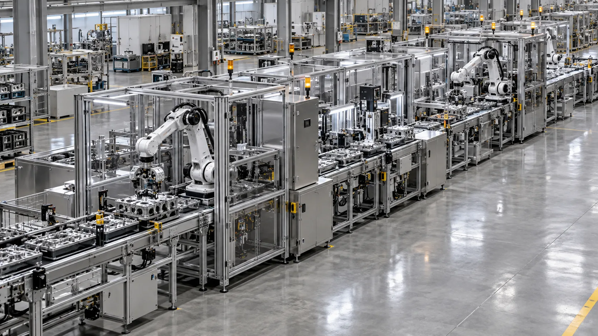

AXIOM ENGINEERING / CUSTOM AUTOMATION
공정이 다르면
설비도 달라야 합니다.
현장의 움직임을 읽고, 필요한 한 대를 설계합니다.

THE QUESTION
속도만 높이면,
공정도 나아질까요?
제품의 방향, 사람의 동선, 멈춤이 생기는 지점까지 봅니다.
DESIGN TO COMMISSIONING
도면에서 시작해
현장에서 답합니다.
설계·가공·조립·제어를 한 흐름으로 연결합니다.